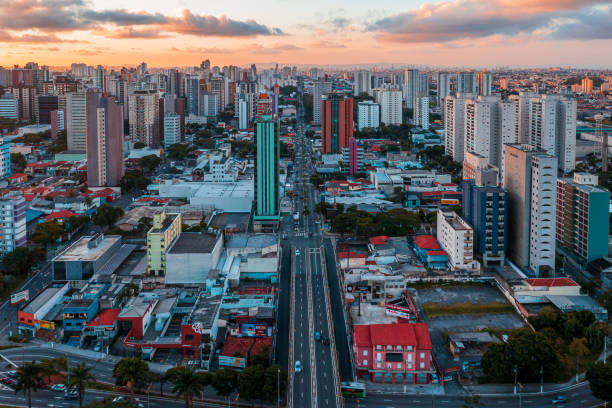
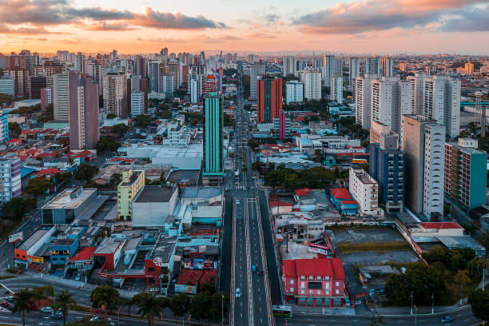

Rio de Janeiro é a segunda maior cidade do Brasil, famosa por seu turismo e importância no setor de petróleo e gás.
População: ~6,7 milhões
São Gonçalo é uma cidade com grande crescimento populacional, próxima à capital.
População: ~1,1 milhão


Duque de Caxias é um importante polo industrial e logístico, com presença forte no setor de petróleo.
População: ~930 mil


Nova Iguaçu é uma grande cidade da Baixada Fluminense, com comércio e serviços expressivos.
População: ~830 mil
 

Niterói é conhecida por seu alto IDH, sendo um importante centro de serviços e educação.
População: ~520 mil